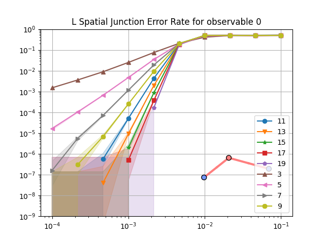
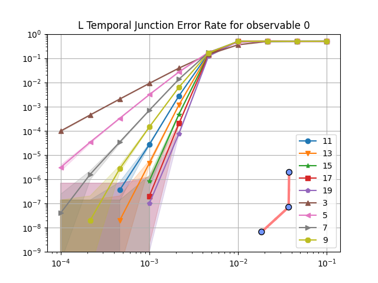

Extended plaquettes implementation#
When are extended plaquettes used?#
Extended plaquettes are used in fixed parity convention when implementing some spatial junctions.
These plaquettes are needed to keep the fixed parity convention.
What are the implications of using extended plaquettes?#
Longer QEC rounds#
The current implementation of extended plaquettes (sown below) requires 8 moments, instead of only 6 moments for regular plaquettes.
That means that the quantum circuit implementing a QEC experiment with a spatial junction will have idle moments, due to the need for regular plaquettes to wait 2 moments at each QEC rounds to synchronise with the extended plaquette.
In turns, more idle moments means more opportunity for physical errors, which might reduce the final logical error-rate.
Smaller distance#
Controlling the orientation of hook errors in extended plaquettes is way more costly than in regular ones. Due to the already high number of moments needed to implement extended plaquette, the cost of controlling hook errors becomes prohibitive in terms of number of moments needed (which directly translates to number of idle moments for regular plaquettes, and so more errors).
Instead, hook errors are left as-is and schedules of extended plaquettes are alternated.
It turns out that using this technique does not remove all low-weights errors. For example, for a very simple computation, here is an image showing a weight-5 undetectable logical error on a surface code that is supposed to have a distance of 7.
Visualisation of a weight-5 error that is undetectable (because each detectors involved are triggered by 2 errors, which means that they will not raise any detection event) and that changes the logical observable. Each error is visualised with a cross. The cross colour follows the XYZ=RGB convention, and the moment index at which the error takes place is written above the cross (an error is always scheduled at the end of the moment, so any operation applied at the same moment is applied before the error).#
The same error pattern can be observed for higher distances:
Visualisation of a weight-7 error that is undetectable (because each detectors involved are triggered by 2 errors, which means that they will not raise any detection event) and that changes the logical observable.#
In theory, this is a huge problem as the implementation of extended plaquettes reduces the resistance of the code against error.
But in practice, it turns out that this is not an issue. To show that, we need to compare the logical error-rate of a computation that uses extended plaquettes with a similar computation that does not. For the sake of simplicity, we compare the simplest computation involving a spatial junction with its rotated counterpart.
{kind=link}
{kind=link}
The logical error rates computed can be seen below:
 {kind=link}
{kind=link}
To compare these logical error rates, it is interesting to plot their ratio for each physical error rates and distances. This is done below with the ratio of the logical error rate obtained on the spatial junction (containing extended plaquettes) and the one obtained on temporal junctions (without extended plaquettes).
Ratio between the logical error rates for the spatial junction and temporal junction.#
As expected, the use of extended plaquettes leads to a worse logical error rate. But the numbers matter here! For example, for a physical error rate of 10⁻³, increasing the distance on the temporal junction reduces the logical error rate by ~8. For the same physical error rate, and for distances up to 17, the above plot shows that the spatial junction (using extended plaquette) logical error rate is never higher than 3 times its temporal counterpart.
That means that, in practice, using extended plaquettes have a noticeable effect on logical error rate but that effect is lower than decreasing the distance of the code.